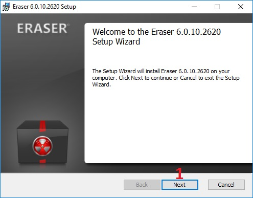
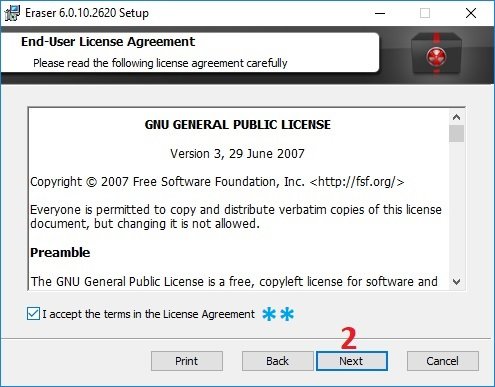
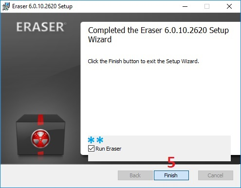
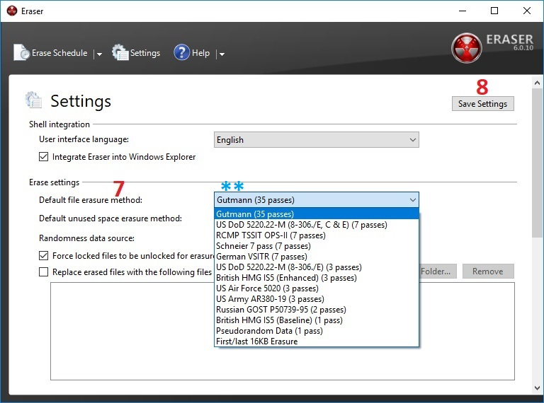
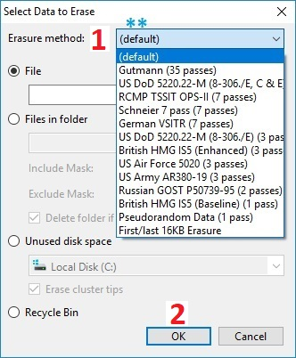

Eraser || ايرايسر
الاسم: ايرايسر
المهمة: حذف المجلدات والملفات بشكل آمن من جهاز الكمبيوتر ووسائط التخزين
أنظمة التشغيل التي يعمل عليها: ويندوز
الثمن: مجاني
كيف يعمل؟
يقوم بحذف أيقونة الملف/المجلد وتشويه البيانات بشكل معقد حيث يصعب من إمكانية استرجاعها عن طريق أي
برنامج
ما هو الفرق بين المجلد والملف؟
الملف: هو مكان لتخزين البيانات، مثل: ملف وورد، ملف جداول اكسل، صورة، أو أغنية
المجلد: هو مكان لتخزين الملفات، يمكن للمجلد أن يحتوي ملفات مختلفة، يمكن تشبيه الملف أو الملفات بـ الكتب | وتشبيه المجلد بـ المكتبة
ما الفرق بين الحذف العادي والحذف عن طريق ايرايسر؟
عندما يتم حذف أي ملف بشكل عادي يقوم نظام التشغيل بحذف أيقونة الملف من واجهة المستخدم، بمعنى تقني: يقوم بحذف مؤشر/رابط أيقونة الملف/المجلد مع مكان تواجده على القرص الصلب
يقوم ايرايسر بحذف أيقونة الملف/المجلد وتشويه البيانات بشكل معقد حيث يصعب من إمكانية استرجاعها عن طريق أي برنامج، تتم عملية تشويه البيانات من خلال كتابة بيانات وهمية عدة مرات فوق البيانات المراد حذفها ينصح بتحديد خوارزمية الكتابة 7 مرات أقل شيء للوصول لنسبة تشويه مقبولة
الحذف الآمن
-
ما هي الطريقة لحذف ملف أو مجلد من جهاز الكمبيوتر أو من وحدة التخزين (فلاش ميموري)؟
- حذف (ديليت)
- Shift + Delete
- النقل إلى سلة المحذوفات، ثم إفراغ سلة المحذوفات
-
ما هي الطريقة لحذف كافة الملفات والمجلدات من جهاز الكمبيوتر أو وحدة التخزين (فلاش ميموري)؟
- فرمتة الجهاز أو وحدة التخزين Format
ولكن!
هل الحذف بالطرق السابقة، يعني أن الملف أو المجلد الذي قمنا بحذفه، لا يمكن استرجاعه؟ الجواب: لا!.. فإن الملفات والمجلدات التي يتم حذفها بالطرق السابقة، قابلة للاسترجاع! حيث يمكن استرجاع ملفات ومجلدات من جهاز الكمبيوتر أو وحدة التخزين بعد أشهر وسنوات من حذفها، ويمكن استرجاع الملفات والمجلدات من جهاز الكمبيوتر أو وحدة التخزين بعد عدة مرات من الفورمات
استرجاع ملفات حُذفت بشكل عادي!
عملية استرجاع أو استعادة الملفات المحذوفة من الكمبيوتر أو وحدة التخزين، يمكن أن تتم عبر برامج بسيطة ومجانية ومتوفر، لذلك، فإن جميع خيارات الحذف السابقة أو الشائعة (ديليت - شيفت + ديليت -النقل إلى سلة المحذوفات - إفراغ سلة المحذوفات - فرمتة الجهاز) هي عمليات حذف غير آمنة
سؤال!
هل يوجد طريقة لحذف الملفات والمجلدات من جهاز الكمبيوتر أو وسائط التخزين بطريقة آمنة، وغير قابلة للاستعادة؟ الجواب: نعم يوجد تطبيقات تقوم بحذف الملفات والمجلدات من جهاز الكمبيوتر ووسائط التخزين بطريقة آمنة ، وسيتم في الفقرة التالية، شرح كيفية تنصيب وإعداد تطبيق ERASER للحذف الآمن
يتكون هذا الدليل من ثلاثة أقسام رئيسية :
1- تنصيب برنامج ايرايزر
-
الحصول على التطبيق:
- لأجهزة ويندوز من هنا أو من موقع التطبيق
-
بعد تحميل التطبيق على الجهاز، وتشغيله، تظهر النافذة التالية
نضغط على "Next"

-
نضغط على المربع بجانب عبارة "I accept the terms in the license Agreement" لتظهر اشارة [㇢]
ثم نضغط على الخيار Next

- نضغط على الخيار Typical

-
نضغط على خيار "Install"

-
عند الإنتهاء، تظهر الرسالة التالية، وتعني بأنه تم تنصيب البرنامج
عند تفعيل الخيار "Run Eraser" فإن البرنامج سوف يعمل عند الضغط على خيار "Finish"

-
بعد تشغيل البرنامج، نقوم بضبط الإعدادات،
من النافذة الرئيسية للبرنامج، نضغط على الخيار "Settings"
 من صفحة "Settings"
سنقوم بضبط اﻹعدادت الافتراضية لعملية الحذف
من صفحة "Settings"
سنقوم بضبط اﻹعدادت الافتراضية لعملية الحذف -
من الخيار "Default file erasure method" نحدد خوارزمية وعدد المرات التي نريد أن يتم بها الكتابة فوق
الملف
الذي نريد حذفه
الخيار الأفضل هو Gutmann بحيث يقوم بالكتابة 35 مرة
يمكن الاختيار بينه وبين الخيارات الاُخرى التي تقوم بالكتابة بين 3 و 7 مرات 
- بعد تحديد الخيار، نقوم بحفظ الإعدادات عبر الضغط على الخيار "Save Settings" في أعلى الصفحة
يقوم الحذف الآمن على طريقة، حذف الملف أو الملفات، ثم الكتابة فوقها عدة مرات متتالية ببيانات ذات نمط مناسب، لتكون عملية الإسترجاع صعبة جداً إن لم تكن مستحيلة
يقدم برنامج"إيريزر | Eraser" خيار الكتابة مرة أو 2 أو 3 أو 7 أو 35 مرة فوف الملف الذي يتم حذفه، كلما زاد عدد مرات الكتابة فوق الملف المحذوف، تتعقد عملية استعادة الملف، ويأخذ حذف الملف وقت أطول بحسب حجمه
2- حذف ملف عن طريق البرنامج
-
بعد حفظ الاعدادات،
نقوم بإغلاق البرنامج
-
الآن، لحذف أي ملف أو مجلد بطريقة آمنة، نضغط بالزر اليمين على أي ملف أو مجلد
نضغط على الخيار Eraser من القائمة-
عند الضغط على الخيار Eraser يظهر خياران:
- الخيار: Erase | يقوم بعملية الحذف فوراً
- الخيار: Erase on Restart | يقوم بعملية الحذف عند إعادة تشغيل جهاز الكمبيوتر
يعتمد الوقت الذي يحتاجه البرنامج لحذف الملف أو المجلد، على حجم الملف أو المجلد وعلى عدد مرات الكتابة فوق الملف المحذوف، التي اخترناها في الاعدادات
3- جدولة بعض الملفات للحذف
-
يمكن إضافة (جدولة) حذف عدد من الملفات والمجلدات وخيارات اُخرى
-
من الصفحة الرئيسية للبرنامج،
نضغط باليمين داخل المساحة البيضاء، ثم نضغط على الخيار "New Task"

-
تظهر الصفحة التالية:
نضغط على الخيار" Add Data"
تظهر الصفحة التالية "Select Data to Erase" - الخيار File: لتحديد ملف
يتم تحديد الملف من الخيار Browse - الخيار Files in folder: تحديد عدة ملفات داخل المجلد
يتم تحديد الملفات من الخيار Browse - الخيار Unused disk space: لحذف (تنظيف) المساحة الفارغة في أحد الأقراص الصلبة أو وحدة التخزين (فلاش ميموري) يستخدم هذا الخيار، لتدمير الملفات والمجلدات التي تم حذفها بالطريقة التقليدية، قبل تنصيب برنامج "إيريزر"
- خيار Recycle Bin: لحذف الملفات والمجلدات التي داخل "سلة المحذوفات" بعد تحديد الخيار المناسب.
- نذهب إلى Erasure method حيث يمكننا تحديد عدد مرات الكتابة فوق الملف أو المجلد
عند اختيار أو ترك الخيار "Default" فإنه يتم اعتماد الإعداد التي وضعناها في الاعدادات سابقاً
 - ثم نضغط على خيار "OK"
- Run manually: يتم البدء بعملية الحذف يدوياً
- Run immediately: يتم البدء بعملية الحذف فوراً
- Run on restart: يتم البدء بعملية الحذف عند إعادة تشغيل الكمبيوتر
- بعد الإنتهاء نضغط على الخيار "OK" تظهر الصفحة الرئيسية

-
في الفقرة "Task Type"

الفقرة "Data to erase" تعرف المهام التي اخترناها

إن كنا اخترنا الخيار "Run immediately" فسيتم فوراً البدء بعملية الحذف، كما في الصورة السابقة
إن كنا اخترنا الخيار "Run manually" يجب أن نضغط بالزر اليمين على المهمة واختيار الخيار "Run"
عند الإنتهاء من مهمة الحذف، تظهر عبارة Completed